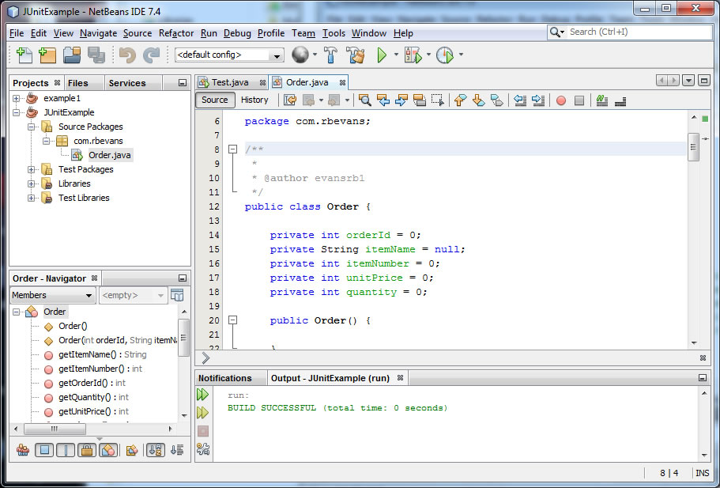
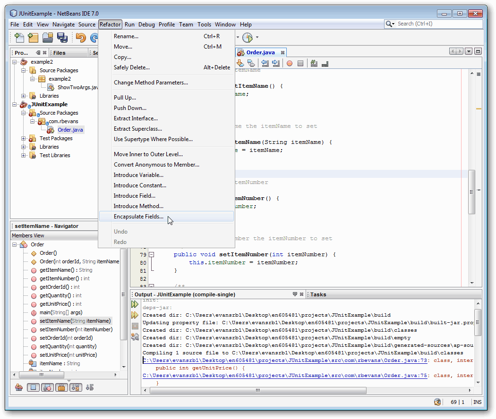
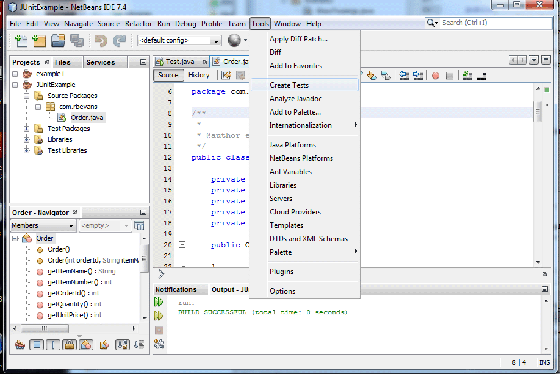
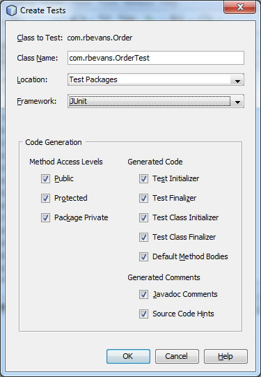
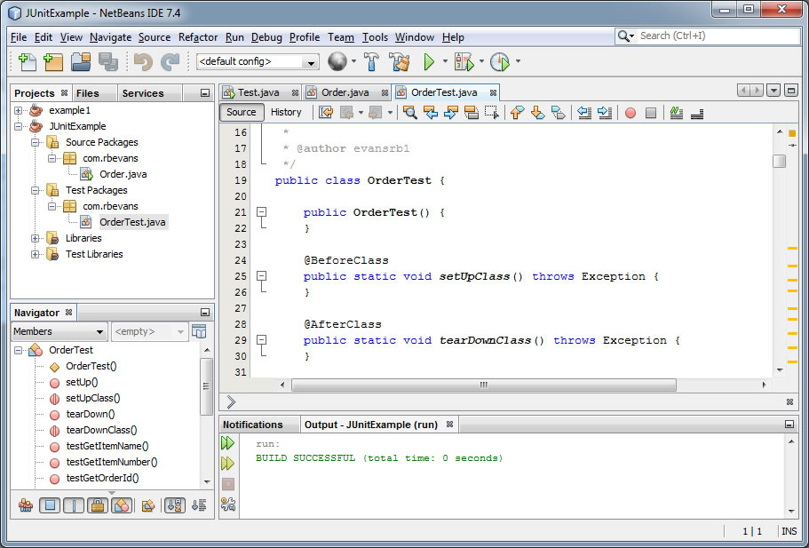
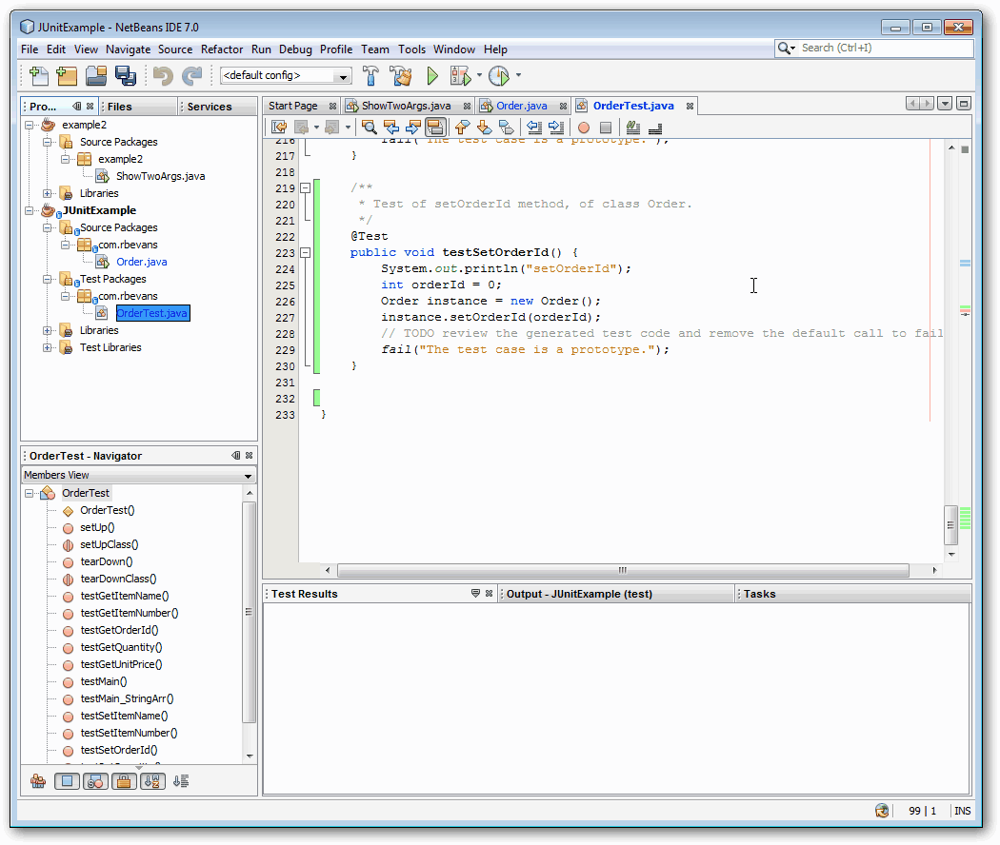
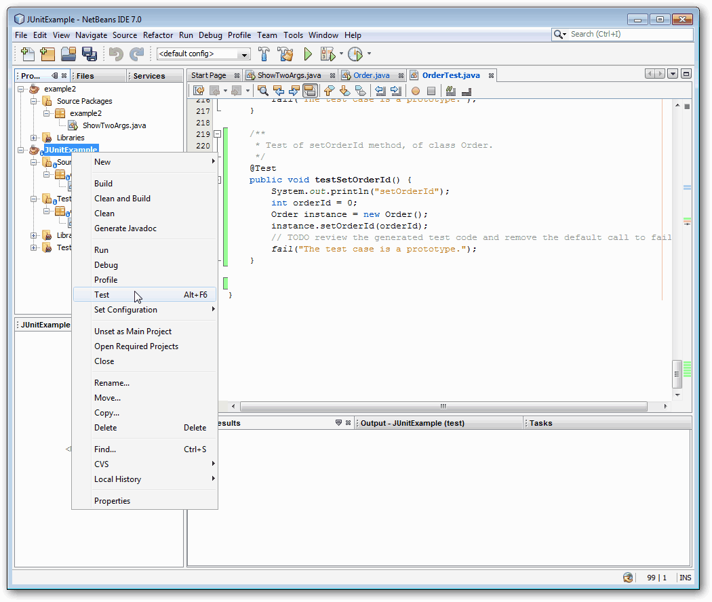
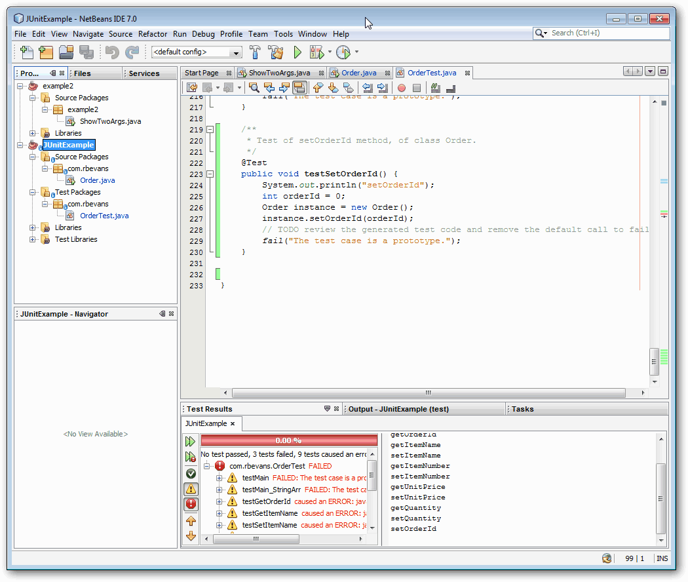
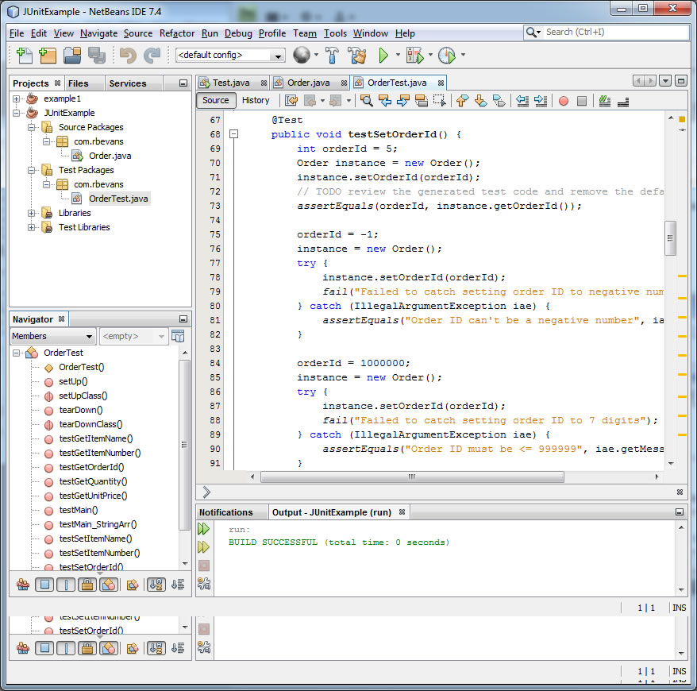
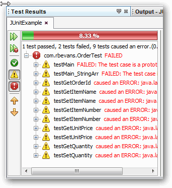

JUnit
Required Reading
Brief JUniit tutorial which describes some basic features
Optional Reading
Documents at www.junit.org. Note, you do not need to download JUnit if you are using Netbeans, it is already installed (if you accepted the license for it).
What is JUnit
JUnit is a unit testing framework for the Java Programming Language. Every programmer knows that it is good to test their code, but few take the time to write, thorough, repeatable tests that do just that.
JUnit allows you to write those repeatable, automated tests for your code. It supports:
You may have already played around with JUnit in Netbeans. You can openn a class and then go to the Tools->Create JUnit Tests menu and Netbeans will try to make as many tests as it can for your code, and then you can fill out the details and add more as you go.
If you try to use JUnit, the benefit is immediatly visible. You are now now longer focused on implementing your design, instead, all you are trying to do is write tests for your code. It helps focus your tests, and you think about the boundary tests without being distracted by your implementation. It also provides a test framework that remains in place as your code evolves, eliminating "creaping bugs" which are introduced as functionality may change.
As an alternative, and as a better way to write much better code, you write your tests FIRST, then you code second. As an example, I'll walk you through the use of JUnit on a brand new class called Order in a Netbeans project called JUnitExample
Example Usage
Please note that some screenshots are from an older version of Netbeans, but the content is the same as the current version.
Order is a class that contains the following information
So, first you make your project, define the class Order and set the attributes. The screen shot shows the full constructor, but make a no-arg constructor as well.

Next you can make the get/set methods by using tools in Eclipse, or by the following men (Refactor -> Encapsulate Fields...) in Netbeans. This will help you automatically generate the get/set methods for the attributes in your class.

Now that you have your class with stub methods (nothing has really been impelmented yet), you can have Netbeans (or you can build them yourself) create the JUnit tests for this class:

Then it will ask you which tests to generate, and what code generation options you want to use. You can play with them, but the defaults should work fine.

Now you finally have a OrderTest class in the Test Packages directory. JUnit may do some automatic code generation, but for an empty class like this, it just gives you empty methods that you need to fill in. There a several methods that let you establish initial conditions before the test begins (some shown below).

In the following screen, I've filled in the tests for the setOrderId() method. Note that the test is prefaces with "test". Initially, there will be a line that looks like:
fail("The test case is a prototype.");
Which if left in place, will cause the test to fail.

It should be no surprise what will happen if we try to run the test set at this point. All of the code is stubbed out, everything but testSetOrderId() is set to fail. But...let's run the tests by right clicking on the project name and selecting Test

When you run the above, you'll get the expected results (shown below). Note the listing of "failed" tests.

So, at this point, not much use. What you want to do next is to start implementing the methods for the tests you've written. In the case, let's fill in the content of setOrderId().

Now when we run the JUnit tests, we see that the testSetOrderId() method has now passed!

At this point, you should go back and fill in all the Test methods, then start implementing the base methods in Order.java. Once you have your test cases completed, any time you do any maintenance to the code, you run your tests cases and you unit test all your methods.
As you read this, hopefully you realize that to fill in test methods for all of your classes will take a bit of work, and you may have to initializee files, databases, connections for each test. Yes it is a lot of work, and yes it is how you should do code development. This unit testing produces good, solid code that works, and that has many fewer bugs than just coding up the design. Plus it allows regression testing for any future changes.
For our class, using JUnit is not required, but I just wanted to give a quick intro to a very handy tool.